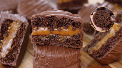

PÃO DE MEL (com aproveitamento integral da banana)

- INGREDIENTES
- 1 xícara (chá) de leite
- 1 xícara (chá) de mel
- ½ xícara (chá) de açúcar
- 1 colher (sopa) de margarina
- 1 colher (café) de canela em pó
- 1 colher (café) de cravo em pó (ou 2 unidades socadas)
- 3 bananas pequenas (tipo nanica) cozidas com as cascas
- 3 xícaras (chá) de farinha de trigo
- 1 colher (sobremesa) de bicarbonato de sódio
- 1 colher (chá) de fermento em pó
- RECHEIO
- COBERTURA
- 500 g de chocolate cobertura ou fracionado derretido
- MODO DE PREPARO
- Cozinhe as bananas com cascas em um pouco de água por 5 minutos e depois coe.
- No liquidificador, bata as bananas cozidas com o leite.
- Em uma tigela, misture bem o mel, o açúcar, a margarina, a canela, o cravo e o creme de banana. Depois, acrescente a farinha de trigo, o bicarbonato e o fermento
misturados.
- Coloque a massa em forminhas ou em uma assadeira e leve ao forno preaquecido a 180 °C por 30 a 40 minutos.
- Retire do forno, deixe esfriar e corte o pão de mel em quadrados.
- Depois, recheie os pedaços com doce de leite e banhe-os em chocolate derretido.